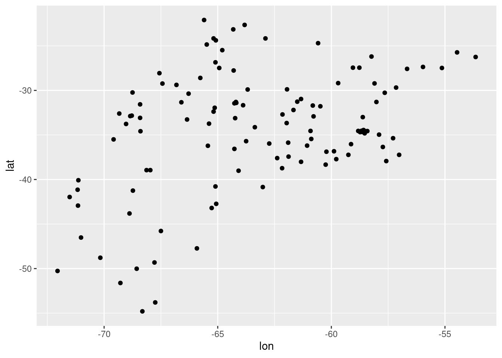
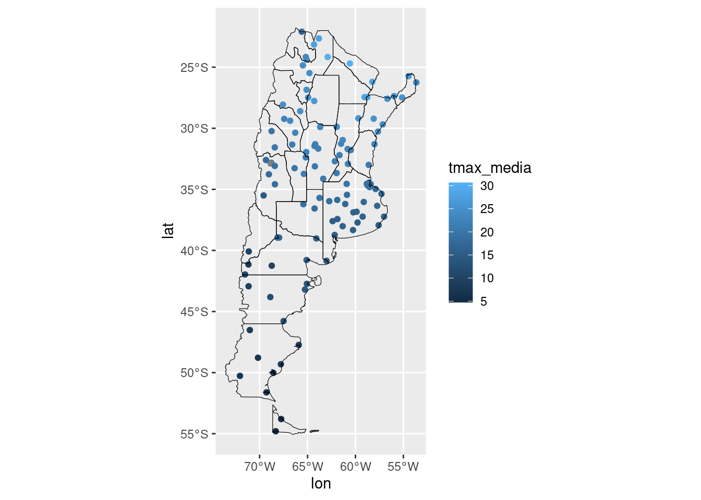
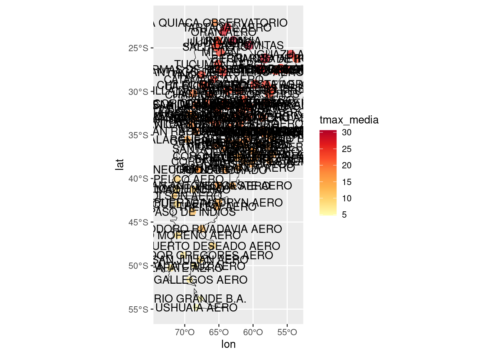
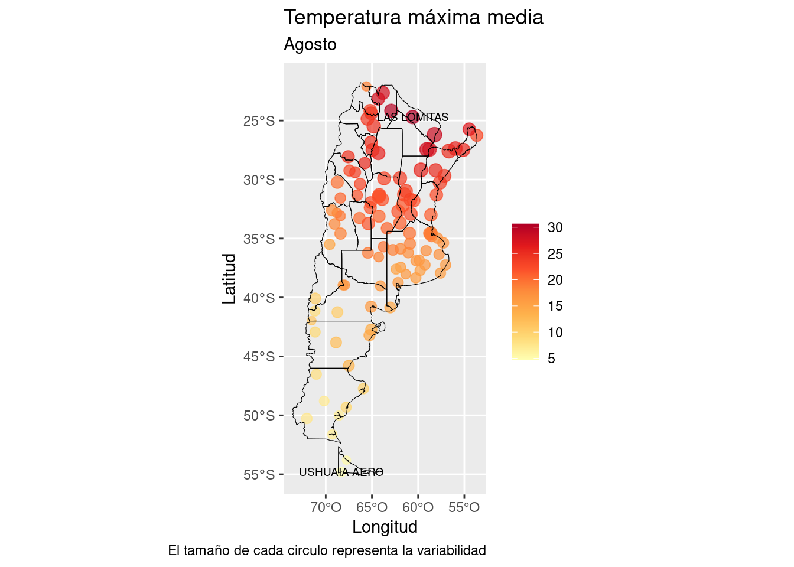
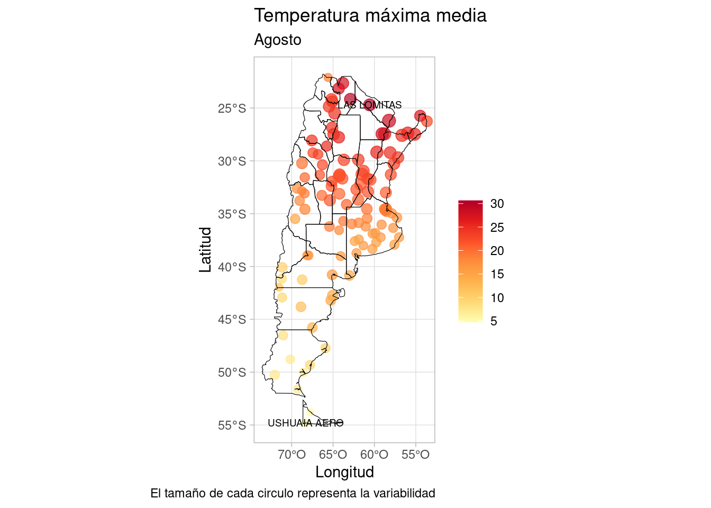

Escalas
Previamente comentamos que el mapeo de una variable en un elemento geométrico, por ejemplo cuando le asignamos distintos colores a los puntos que representan cada tipo de temperatura, usa una escala para definir, en este caso, que color le corresponde a cada elemento.
También cambiamos la apariencia del relleno (o fill) de los contornos y la forma de los puntos (o shape). Para esto, {ggplot2} siempre usa una escala que podemos modificar de acuerdo a nuestro gusto y teniendo en cuenta cómo queremos comunicar nuestros resultados.
Por supuesto, modificar una escala implica sumar una nueva capa al gráfico sumando una nueva función. Todas las funciones de escala comienzan con scale (de escala en inglés), el típo de apariencia que queremos modificar (color, fill, shape, etc) y en muchos casos un nombre o una característica de esa escala.
Para mostrar como funciona, vamos a descargar datos de las estaciones meteorológicas del Servicio Meteorológico Nacional para el mes de agosto de 2020 y con suerte al final de este documento tendremos un gráfico listo para publicar.
Pero por supuesto, primero tenemos que manipular los datos para poder utilizarlos. En particular necesitaremos información de las estaciones, sus metadatos, que se encuentran en un archivo distinto. Y de paso calculamos la variable que nos interesa: la temperatura máxima media para agosto.

Por ahora este gráfico no nos dice nada, necesitamos agregarle una capa con el mapa tal cual hicimos previamente.
Escala de colores y otras características
Si bien ahora podemos identificar donde están las estaciones, no tenemos información de la temperatura máxima media. Podríamos cambiar el color de los puntos para que representen el valor que toma esa variable en cada estación.

Pero esta escala de colores que usa {ggplot2} por defecto no es de las mejores, es difícil diferenciar entre los valores. Existen infinitas paletas de colores que se pueden usar en ggplot, algunas por ejemplo buscan poder distinguirse si imprimimos el gráfico en blanco y negro, otras están diseñadas para que personas con daltonismo puedan distinguir los colores. Una escala o paleta de colores muy usada es viridis que fue creada justamente para resolver este y otros problemas. También existe otra gran familia de paletas de colores llamada ColorBrewer.
Vamos a probar la paleta “YlOrRd” , esta paleta es secuencial y es justo lo que necesitamos para visualizar una variable continua como la temperatura. Cómo estamos modificando el color, la función a usar será scale_color_distiller(), la hermana continua de scale_color_brewer():
En este caso también agregamos el argumento direction = 1 para que la paleta de colores los muestre de más oscuros a más claros. Esta desición es estética y muchas veces depende de las variables a graficar.
Desafío
A modo de prueba, cambia la paleta de colores actual por la de Viridis. Para eso tenés que usar scale_color_viridis_c(). La “c” del final viene de continuous y se usa para variables continuas, mientras que si los datos son discretos o categorías, se usa “d” al final.
Nuestro gráfico va quedando mejor y podemos aprovechar la capacidad de {ggplot2} de mapear variables a los elementos del gráfico y visualizar la variabilidad de la temperatura máxima modificando el tamaño de los puntos de acuerdo al desvío estandar.
## Warning: Removed 1 rows containing missing values (geom_point).
Es interesante ver como las temperaturas máximas medias mayores también tienen mayor variabilidad. Pero ahora algunos puntos se superponen y es posible que no estemos viendo algunas estaciones. Vamos a arreglar eso agregando transparencia y de paso modificar el tamaño de los puntos con la escala correspondiente scale_size_area() y sacar la legenda con guide = NULL.
## Warning: Removed 1 rows containing missing values (geom_point).

Escalas de ejes
Ahora que la información del gráfico se ve bien, pasemos a los ejes. Al igual que para el color, el tamaño y otros elementos del gráfico, para los ejes también existen funciones “scale”. En este caso las escalas que modifican los ejes justamente comienzan con scala_x_ o scale_y_ según sea el caso y hay una gran variedad de opciones dependiendo del tipo de dato que estamos graficando en cada eje.
Si en el eje y graficamos una variable discreta entonces podremos modificar su especto con scale_y_discrete(). En este caso la función geom_sf() automáticamente modifica la apariencia de los ejes y no requieren de mucho trabajo.
Pero queremos que nuestro gráfico quede listo para publicar y la “W” de west (oeste en inglés) puede no ser muy amigable. Modifiquemos entonces el eje x con la función scale_x_continuous(). En este caso queremos modificar las etiquetas o labels y para eso usaremos la función LonLabel() del paquete {metR}. Esta función recibe una función anónima que toma cada longitud y el cambia el “°W° por”°O".
observaciones %>%
filter(region != "ANTARTIDA") %>%
ggplot(aes(lon, lat)) +
geom_point(aes(color = tmax_media, size = tmax_var), alpha = 0.7) +
geom_sf(data = mapa, fill = NA, color = "black", size = 0.2, inherit.aes = FALSE) +
scale_color_distiller(palette = "YlOrRd", direction = 1) +
scale_size_area(max_size = 4, guide = NULL) +
scale_x_continuous(labels = function(x) LonLabel(x, west = "°O"))
## Warning: Removed 1 rows containing missing values (geom_point).
Elementos de texto
Ya sumamos 3 escalas y el gráfico ya se ve muy bien. ¿Cómo hacemos si queremos identificar estaciones individuales? Por ahora es difícil, pero podríamos agregar etiquetas de texto con el nombre de cada estación al lado de cada punto usando geom_text(), y en este caso la apariencia está dada por label o etiqueta:
observaciones %>%
filter(region != "ANTARTIDA") %>%
ggplot(aes(lon, lat)) +
geom_point(aes(color = tmax_media, size = tmax_var), alpha = 0.7) +
geom_sf(data = mapa, fill = NA, color = "black", size = 0.2, inherit.aes = FALSE) +
scale_color_distiller(palette = "YlOrRd", direction = 1) +
scale_size_area(max_size = 4, guide = NULL) +
scale_x_continuous(labels = function(x) LonLabel(x, west = "°O")) +
geom_text(aes(label = station))
## Warning: Removed 1 rows containing missing values (geom_point).

Pero nos olvidamos que tenemos más de 100 estaciones, es imposible agregarle etiquetas a todos. Pero podríamos querer resaltar algunos, tal vez los de una región en particular o los que cumplen con la condición de tener las mayores temperaturas máximas medias. Para eso vamos a generarnos una nueva tabla con las estaciones que queremos resaltar y de paso usarla dentro de geom_text().
extremos_temperatura <- observaciones %>%
filter(region != "ANTARTIDA") %>%
filter(tmax_media == max(tmax_media, na.rm = TRUE) |
tmax_media == min(tmax_media, na.rm = TRUE)) # Estaciones con extremos!
observaciones %>%
filter(region != "ANTARTIDA") %>%
ggplot(aes(lon, lat)) +
geom_point(aes(color = tmax_media, size = tmax_var), alpha = 0.7) +
geom_sf(data = mapa, fill = NA, color = "black", size = 0.2, inherit.aes = FALSE) +
scale_color_distiller(palette = "YlOrRd", direction = 1) +
scale_size_area(max_size = 4, guide = NULL) +
scale_x_continuous(labels = function(x) LonLabel(x, west = "°O")) +
geom_text(aes(label = station),
data = extremos_temperatura, # Esta capa usa la tabla extremos_temperatura!
size = 2.5)
## Warning: Removed 1 rows containing missing values (geom_point).
Del código anterior surge algo muy importante: es posible generar capas en un gráfico usando una data.frame distinto al que usamos para graficar las capas anteriores. Esto es útil principalmente para definir etiquetas o resaltar determinadas observaciones.
Y el truco está en que ambos data.frames tienen las variables lon y lat y entonces {ggplot2} puede identificar en que parte del gráfico (en que valores de x y en que valores de y) colocar cada elemento.
Veamos ahora una (de varias) maneras agregar o modificar elementos de texto en el gráfico. Vamos a usar una nueva función (y una nueva capa!), labs():
observaciones %>%
filter(region != "ANTARTIDA") %>%
ggplot(aes(lon, lat)) +
geom_point(aes(color = tmax_media, size = tmax_var), alpha = 0.7) +
geom_sf(data = mapa, fill = NA, color = "black", size = 0.2, inherit.aes = FALSE) +
scale_color_distiller(palette = "YlOrRd", direction = 1) +
scale_size_area(max_size = 4, guide = NULL) +
scale_x_continuous(labels = function(x) LonLabel(x, west = "°O")) +
geom_text(aes(label = station),
data = extremos_temperatura, # Esta capa usa la tabla extremos_temperatura!
size = 2.5) +
labs(title = "Temperatura máxima media",
subtitle = "Agosto",
caption = "El tamaño de cada circulo representa la variabilidad",
x = "Longitud",
y = "Latitud",
color = "")
## Warning: Removed 1 rows containing missing values (geom_point).

Agregamos un título, un subtítulo, el epígrafe de la figura (caption) para las aclaraciones y cambiamos el nombre de los ejes para que se vean mejor. Pero ademas eliminamos el nombre de la leyenda porque era un poco redundante (ya está en el título).
Temas
Nos queda una última cosa por hacer, cambiar la apariencia global del gráfico. {ggplot2} tiene muchos temas disponibles y para todos los gustos. Pero además hay otros paquetes que extienden las posibilidades, por ejemplo {ggthemes}.
Por defecto {ggplot2} usa theme_grey(), probemos theme_light():
observaciones %>%
filter(region != "ANTARTIDA") %>%
ggplot(aes(lon, lat)) +
geom_point(aes(color = tmax_media, size = tmax_var), alpha = 0.7) +
geom_sf(data = mapa, fill = NA, color = "black", size = 0.2, inherit.aes = FALSE) +
scale_color_distiller(palette = "YlOrRd", direction = 1) +
scale_size_area(max_size = 4, guide = NULL) +
scale_x_continuous(labels = function(x) LonLabel(x, west = "°O")) +
geom_text(aes(label = station),
data = extremos_temperatura, # Esta capa usa la tabla extremos_temperatura!
size = 2.5) +
labs(title = "Temperatura máxima media",
subtitle = "Agosto",
caption = "El tamaño de cada circulo representa la variabilidad",
x = "Longitud",
y = "Latitud",
color = "") +
theme_light()
## Warning: Removed 1 rows containing missing values (geom_point).

Desafío
Ahora es tu turno. Elegí un tema que te guste y probalo. Además, si se te ocurre algún título mejor modificalo!
Junto con las funciones theme_...(), hay una función llamada theme() que permite cambiar la apariencia de cualquier elemento del gráfico. Tiene casi infinitas opciones y si algún momento te desvelas intentando cambiar esa línea o ese borde, seguro que theme() tiene alguna opción par ahacer eso.
LS0tCnRpdGxlOiAiQXBhcmllbmNpYSBkZSBncsOhZmljb3MiCm91dHB1dDogCiAgaHRtbF9kb2N1bWVudDoKICAgIGNvZGVfZG93bmxvYWQ6IHRydWUKICAgIHRvYzogdHJ1ZQogICAgdG9jX2Zsb2F0OiB0cnVlCiAgICBoaWdobGlnaHQ6IHRhbmdvCi0tLQoKYGBge3Igc2V0dXAsIGluY2x1ZGU9RkFMU0V9CmtuaXRyOjpvcHRzX2NodW5rJHNldChlY2hvID0gVFJVRSwKICAgICAgICAgICAgICAgICAgICAgIG1lc3NhZ2UgPSBGQUxTRSkKbGlicmFyeShnZ3Bsb3QyKQpsaWJyYXJ5KGRwbHlyKQpsaWJyYXJ5KHJlYWRyKQpsaWJyYXJ5KG1ldFIpCmBgYAoKIyMgRXNjYWxhcwoKW1ByZXZpYW1lbnRlXSgwNi1ncmFmaWNvcy1JLmh0bWwpIGNvbWVudGFtb3MgcXVlIGVsICptYXBlbyogZGUgdW5hIHZhcmlhYmxlIGVuIHVuIGVsZW1lbnRvIGdlb23DqXRyaWNvLCBwb3IgZWplbXBsbyBjdWFuZG8gbGUgYXNpZ25hbW9zIGRpc3RpbnRvcyBjb2xvcmVzIGEgbG9zIHB1bnRvcyBxdWUgcmVwcmVzZW50YW4gY2FkYSB0aXBvIGRlIHRlbXBlcmF0dXJhLCB1c2EgdW5hICoqZXNjYWxhKiogcGFyYSBkZWZpbmlyLCBlbiBlc3RlIGNhc28sIHF1ZSBjb2xvciBsZSBjb3JyZXNwb25kZSBhIGNhZGEgZWxlbWVudG8uIAoKVGFtYmnDqW4gY2FtYmlhbW9zIGxhIGFwYXJpZW5jaWEgZGVsIHJlbGxlbm8gKG8gYGZpbGxgKSBkZSBsb3MgY29udG9ybm9zIHkgbGEgZm9ybWEgZGUgbG9zIHB1bnRvcyAobyBgc2hhcGVgKS4gUGFyYSBlc3RvLCB7Z2dwbG90Mn0gc2llbXByZSB1c2EgdW5hIGVzY2FsYSBxdWUgcG9kZW1vcyBtb2RpZmljYXIgZGUgYWN1ZXJkbyBhIG51ZXN0cm8gZ3VzdG8geSB0ZW5pZW5kbyBlbiBjdWVudGEgY8OzbW8gcXVlcmVtb3MgY29tdW5pY2FyIG51ZXN0cm9zIHJlc3VsdGFkb3MuIAoKUG9yIHN1cHVlc3RvLCBtb2RpZmljYXIgdW5hIGVzY2FsYSBpbXBsaWNhIHN1bWFyIHVuYSBudWV2YSBjYXBhIGFsIGdyw6FmaWNvIHN1bWFuZG8gdW5hIG51ZXZhIGZ1bmNpw7NuLiBUb2RhcyBsYXMgZnVuY2lvbmVzIGRlIGVzY2FsYSBjb21pZW56YW4gY29uIGBzY2FsZWAgKGRlIGVzY2FsYSBlbiBpbmdsw6lzKSwgZWwgdMOtcG8gZGUgYXBhcmllbmNpYSBxdWUgcXVlcmVtb3MgbW9kaWZpY2FyIChgY29sb3JgLCBgZmlsbGAsIGBzaGFwZWAsIGV0YykgeSBlbiBtdWNob3MgY2Fzb3MgdW4gbm9tYnJlIG8gdW5hIGNhcmFjdGVyw61zdGljYSBkZSBlc2EgZXNjYWxhLiAKClBhcmEgbW9zdHJhciBjb21vIGZ1bmNpb25hLCB2YW1vcyBhIGRlc2NhcmdhciBkYXRvcyBkZSBsYXMgZXN0YWNpb25lcyBtZXRlb3JvbMOzZ2ljYXMgZGVsIFNlcnZpY2lvIE1ldGVvcm9sw7NnaWNvIE5hY2lvbmFsIHBhcmEgZWwgbWVzIGRlIGFnb3N0byBkZSAyMDIwIHkgY29uIHN1ZXJ0ZSBhbCBmaW5hbCBkZSBlc3RlIGRvY3VtZW50byB0ZW5kcmVtb3MgdW4gZ3LDoWZpY28gbGlzdG8gcGFyYSBwdWJsaWNhci4KClBlcm8gcG9yIHN1cHVlc3RvLCBwcmltZXJvIHRlbmVtb3MgcXVlIG1hbmlwdWxhciBsb3MgZGF0b3MgcGFyYSBwb2RlciB1dGlsaXphcmxvcy4gRW4gcGFydGljdWxhciBuZWNlc2l0YXJlbW9zIGluZm9ybWFjacOzbiBkZSBsYXMgZXN0YWNpb25lcywgc3VzIG1ldGFkYXRvcywgcXVlIHNlIGVuY3VlbnRyYW4gZW4gdW4gYXJjaGl2byBkaXN0aW50by4gWSBkZSBwYXNvIGNhbGN1bGFtb3MgbGEgdmFyaWFibGUgcXVlIG5vcyBpbnRlcmVzYTogbGEgdGVtcGVyYXR1cmEgbcOheGltYSBtZWRpYSBwYXJhIGFnb3N0by4KCmBgYHtyfQplc3RhY2lvbmVzIDwtIHJlYWRfY3N2KCJkYXRvcy9lc3RhY2lvbmVzX3Ntbi5jc3YiKSAjIE1ldGFkYXRvcwoKZmVjaGFzIDwtIHNlcS5EYXRlKGx1YnJpZGF0ZTo6eW1kKDIwMjAwODAxKSwgbHVicmlkYXRlOjp5bWQoMjAyMDA4MzEpLCBieSA9ICIxIGRheSIpCgpvYnNlcnZhY2lvbmVzIDwtIEdldFNNTkRhdGEoZmVjaGFzLCB0eXBlID0gImRhaWx5IikgJT4lIAogIGdyb3VwX2J5KHN0YXRpb24pICU+JSAKICBzdW1tYXJpc2UodG1heF9tZWRpYSA9IG1lYW4odG1heCwgbmEucm0gPSBUUlVFKSwKICAgICAgICAgICAgdG1heF92YXIgPSBzZCh0bWF4LCBuYS5ybSA9IFRSVUUpKQoKb2JzZXJ2YWNpb25lcyA8LSBsZWZ0X2pvaW4ob2JzZXJ2YWNpb25lcywgZXN0YWNpb25lcywgYnkgPSBjKCJzdGF0aW9uIiA9ICJub21icmUiKSkgCmBgYAoKCmBgYHtyfQpvYnNlcnZhY2lvbmVzICU+JSAKICBmaWx0ZXIocmVnaW9uICE9ICJBTlRBUlRJREEiKSAlPiUgCiAgZ2dwbG90KGFlcyhsb24sIGxhdCkpICsKICBnZW9tX3BvaW50KCkgCmBgYAoKUG9yIGFob3JhIGVzdGUgZ3LDoWZpY28gbm8gbm9zIGRpY2UgbmFkYSwgbmVjZXNpdGFtb3MgYWdyZWdhcmxlIHVuYSBjYXBhIGNvbiBlbCBtYXBhIHRhbCBjdWFsIGhpY2ltb3MgcHJldmlhbWVudGUuIAoKYGBge3J9Cm1hcGEgPC0gcm5hdHVyYWxlYXJ0aDo6bmVfc3RhdGVzKGNvdW50cnkgPSBjKCJhcmdlbnRpbmEiKSwgcmV0dXJuY2xhc3MgPSAic2YiKQoKb2JzZXJ2YWNpb25lcyAlPiUgCiAgZmlsdGVyKHJlZ2lvbiAhPSAiQU5UQVJUSURBIikgJT4lIAogIGdncGxvdChhZXMobG9uLCBsYXQpKSArCiAgZ2VvbV9wb2ludCgpICsKICBnZW9tX3NmKGRhdGEgPSBtYXBhLCBmaWxsID0gTkEsIGNvbG9yID0gImJsYWNrIiwgc2l6ZSA9IDAuMiwgaW5oZXJpdC5hZXMgPSBGQUxTRSkgCmBgYAoKCiMjIyBFc2NhbGEgZGUgY29sb3JlcyB5IG90cmFzIGNhcmFjdGVyw61zdGljYXMKClNpIGJpZW4gYWhvcmEgcG9kZW1vcyBpZGVudGlmaWNhciBkb25kZSBlc3TDoW4gbGFzIGVzdGFjaW9uZXMsIG5vIHRlbmVtb3MgaW5mb3JtYWNpw7NuIGRlIGxhIHRlbXBlcmF0dXJhIG3DoXhpbWEgbWVkaWEuIFBvZHLDrWFtb3MgY2FtYmlhciBlbCBjb2xvciBkZSBsb3MgcHVudG9zIHBhcmEgcXVlIHJlcHJlc2VudGVuIGVsIHZhbG9yIHF1ZSB0b21hIGVzYSB2YXJpYWJsZSBlbiBjYWRhIGVzdGFjacOzbi4KCmBgYHtyfQpvYnNlcnZhY2lvbmVzICU+JSAKICBmaWx0ZXIocmVnaW9uICE9ICJBTlRBUlRJREEiKSAlPiUgCiAgZ2dwbG90KGFlcyhsb24sIGxhdCkpICsKICBnZW9tX3BvaW50KGFlcyhjb2xvciA9IHRtYXhfbWVkaWEpKSArCiAgZ2VvbV9zZihkYXRhID0gbWFwYSwgZmlsbCA9IE5BLCBjb2xvciA9ICJibGFjayIsIHNpemUgPSAwLjIsIGluaGVyaXQuYWVzID0gRkFMU0UpIApgYGAKClBlcm8gZXN0YSBlc2NhbGEgZGUgY29sb3JlcyBxdWUgdXNhIHtnZ3Bsb3QyfSBwb3IgZGVmZWN0byBubyBlcyBkZSBsYXMgbWVqb3JlcywgZXMgZGlmw61jaWwgZGlmZXJlbmNpYXIgZW50cmUgbG9zIHZhbG9yZXMuIEV4aXN0ZW4gaW5maW5pdGFzIHBhbGV0YXMgZGUgY29sb3JlcyBxdWUgc2UgcHVlZGVuIHVzYXIgZW4gZ2dwbG90LCBhbGd1bmFzIHBvciBlamVtcGxvIGJ1c2NhbiBwb2RlciBkaXN0aW5ndWlyc2Ugc2kgaW1wcmltaW1vcyBlbCBncsOhZmljbyBlbiBibGFuY28geSBuZWdybywgb3RyYXMgZXN0w6FuIGRpc2XDsWFkYXMgcGFyYSBxdWUgcGVyc29uYXMgY29uIGRhbHRvbmlzbW8gcHVlZGFuIGRpc3Rpbmd1aXIgbG9zIGNvbG9yZXMuIFVuYSBlc2NhbGEgbyBwYWxldGEgZGUgY29sb3JlcyBtdXkgdXNhZGEgZXMgWyoqdmlyaWRpcyoqXShodHRwczovL2NyYW4uci1wcm9qZWN0Lm9yZy93ZWIvcGFja2FnZXMvdmlyaWRpcy92aWduZXR0ZXMvaW50cm8tdG8tdmlyaWRpcy5odG1sKSBxdWUgZnVlIGNyZWFkYSBqdXN0YW1lbnRlIHBhcmEgcmVzb2x2ZXIgZXN0ZSB5IG90cm9zIHByb2JsZW1hcy4gVGFtYmnDqW4gZXhpc3RlIG90cmEgZ3JhbiBmYW1pbGlhIGRlIHBhbGV0YXMgZGUgY29sb3JlcyBsbGFtYWRhIFsqKkNvbG9yQnJld2VyKipdKGh0dHBzOi8vY29sb3JicmV3ZXIyLm9yZy8pLgoKVmFtb3MgYSBwcm9iYXIgbGEgcGFsZXRhICJZbE9yUmQiICwgZXN0YSBwYWxldGEgZXMgKnNlY3VlbmNpYWwqIHkgZXMganVzdG8gbG8gcXVlIG5lY2VzaXRhbW9zIHBhcmEgdmlzdWFsaXphciB1bmEgdmFyaWFibGUgY29udGludWEgY29tbyBsYSB0ZW1wZXJhdHVyYS4gQ8OzbW8gZXN0YW1vcyBtb2RpZmljYW5kbyBlbCAqY29sb3IqLCBsYSBmdW5jacOzbiBhIHVzYXIgc2Vyw6EgYHNjYWxlX2NvbG9yX2Rpc3RpbGxlcigpYCwgbGEgaGVybWFuYSAqY29udGludWEqIGRlIGBzY2FsZV9jb2xvcl9icmV3ZXIoKWA6CgpgYGB7cn0Kb2JzZXJ2YWNpb25lcyAlPiUgCiAgZmlsdGVyKHJlZ2lvbiAhPSAiQU5UQVJUSURBIikgJT4lIAogIGdncGxvdChhZXMobG9uLCBsYXQpKSArCiAgZ2VvbV9wb2ludChhZXMoY29sb3IgPSB0bWF4X21lZGlhKSkgKwogIGdlb21fc2YoZGF0YSA9IG1hcGEsIGZpbGwgPSBOQSwgY29sb3IgPSAiYmxhY2siLCBzaXplID0gMC4yLCBpbmhlcml0LmFlcyA9IEZBTFNFKSArCiAgc2NhbGVfY29sb3JfZGlzdGlsbGVyKHBhbGV0dGUgPSAiWWxPclJkIiwgZGlyZWN0aW9uID0gMSkKYGBgCgpFbiBlc3RlIGNhc28gdGFtYmnDqW4gYWdyZWdhbW9zIGVsIGFyZ3VtZW50byBgZGlyZWN0aW9uID0gMWAgcGFyYSBxdWUgbGEgcGFsZXRhIGRlIGNvbG9yZXMgbG9zIG11ZXN0cmUgZGUgbcOhcyBvc2N1cm9zIGEgbcOhcyBjbGFyb3MuIEVzdGEgZGVzaWNpw7NuIGVzIGVzdMOpdGljYSB5IG11Y2hhcyB2ZWNlcyBkZXBlbmRlIGRlIGxhcyB2YXJpYWJsZXMgYSBncmFmaWNhci4gCgoKOjo6IHsuYWxlcnQgLmFsZXJ0LWluZm99CioqRGVzYWbDrW8qKgoKQSBtb2RvIGRlIHBydWViYSwgY2FtYmlhIGxhIHBhbGV0YSBkZSBjb2xvcmVzIGFjdHVhbCBwb3IgbGEgZGUgVmlyaWRpcy4gUGFyYSBlc28gdGVuw6lzIHF1ZSB1c2FyIGBzY2FsZV9jb2xvcl92aXJpZGlzX2MoKWAuIExhICJjIiBkZWwgZmluYWwgdmllbmUgZGUgKmNvbnRpbnVvdXMqIHkgc2UgdXNhIHBhcmEgdmFyaWFibGVzIGNvbnRpbnVhcywgbWllbnRyYXMgcXVlIHNpIGxvcyBkYXRvcyBzb24gZGlzY3JldG9zIG8gY2F0ZWdvcsOtYXMsIHNlIHVzYSAiZCIgYWwgZmluYWwuCjo6OgoKTnVlc3RybyBncsOhZmljbyB2YSBxdWVkYW5kbyBtZWpvciB5IHBvZGVtb3MgYXByb3ZlY2hhciBsYSBjYXBhY2lkYWQgZGUge2dncGxvdDJ9IGRlICptYXBlYXIqIHZhcmlhYmxlcyBhIGxvcyBlbGVtZW50b3MgZGVsIGdyw6FmaWNvIHkgdmlzdWFsaXphciBsYSB2YXJpYWJpbGlkYWQgZGUgbGEgdGVtcGVyYXR1cmEgbcOheGltYSBtb2RpZmljYW5kbyBlbCB0YW1hw7FvIGRlIGxvcyBwdW50b3MgZGUgYWN1ZXJkbyBhbCBkZXN2w61vIGVzdGFuZGFyLgoKYGBge3J9Cm9ic2VydmFjaW9uZXMgJT4lIAogIGZpbHRlcihyZWdpb24gIT0gIkFOVEFSVElEQSIpICU+JSAKICBnZ3Bsb3QoYWVzKGxvbiwgbGF0KSkgKwogIGdlb21fcG9pbnQoYWVzKGNvbG9yID0gdG1heF9tZWRpYSwgc2l6ZSA9IHRtYXhfdmFyKSkgKwogIGdlb21fc2YoZGF0YSA9IG1hcGEsIGZpbGwgPSBOQSwgY29sb3IgPSAiYmxhY2siLCBzaXplID0gMC4yLCBpbmhlcml0LmFlcyA9IEZBTFNFKSArCiAgc2NhbGVfY29sb3JfZGlzdGlsbGVyKHBhbGV0dGUgPSAiWWxPclJkIiwgZGlyZWN0aW9uID0gMSkKYGBgCgpFcyBpbnRlcmVzYW50ZSB2ZXIgY29tbyBsYXMgdGVtcGVyYXR1cmFzIG3DoXhpbWFzIG1lZGlhcyBtYXlvcmVzIHRhbWJpw6luIHRpZW5lbiBtYXlvciB2YXJpYWJpbGlkYWQuIFBlcm8gYWhvcmEgYWxndW5vcyBwdW50b3Mgc2Ugc3VwZXJwb25lbiB5IGVzIHBvc2libGUgcXVlIG5vIGVzdGVtb3MgdmllbmRvIGFsZ3VuYXMgZXN0YWNpb25lcy4gVmFtb3MgYSBhcnJlZ2xhciBlc28gYWdyZWdhbmRvIHRyYW5zcGFyZW5jaWEgeSBkZSBwYXNvIG1vZGlmaWNhciBlbCB0YW1hw7FvIGRlIGxvcyBwdW50b3MgY29uIGxhIGVzY2FsYSBjb3JyZXNwb25kaWVudGUgYHNjYWxlX3NpemVfYXJlYSgpYCB5IHNhY2FyIGxhIGxlZ2VuZGEgY29uIGBndWlkZSA9IE5VTExgLgoKYGBge3J9Cm9ic2VydmFjaW9uZXMgJT4lIAogIGZpbHRlcihyZWdpb24gIT0gIkFOVEFSVElEQSIpICU+JSAKICBnZ3Bsb3QoYWVzKGxvbiwgbGF0KSkgKwogIGdlb21fcG9pbnQoYWVzKGNvbG9yID0gdG1heF9tZWRpYSwgc2l6ZSA9IHRtYXhfdmFyKSwgYWxwaGEgPSAwLjcpICsKICBnZW9tX3NmKGRhdGEgPSBtYXBhLCBmaWxsID0gTkEsIGNvbG9yID0gImJsYWNrIiwgc2l6ZSA9IDAuMiwgaW5oZXJpdC5hZXMgPSBGQUxTRSkgKwogIHNjYWxlX2NvbG9yX2Rpc3RpbGxlcihwYWxldHRlID0gIllsT3JSZCIsIGRpcmVjdGlvbiA9IDEpICsKICBzY2FsZV9zaXplX2FyZWEobWF4X3NpemUgPSA0LCBndWlkZSA9IE5VTEwpCmBgYAoKIyMjIEVzY2FsYXMgZGUgZWplcwoKQWhvcmEgcXVlIGxhIGluZm9ybWFjacOzbiBkZWwgZ3LDoWZpY28gc2UgdmUgYmllbiwgcGFzZW1vcyBhIGxvcyBlamVzLiBBbCBpZ3VhbCBxdWUgcGFyYSBlbCBjb2xvciwgZWwgdGFtYcOxbyB5IG90cm9zIGVsZW1lbnRvcyBkZWwgZ3LDoWZpY28sIHBhcmEgbG9zIGVqZXMgdGFtYmnDqW4gZXhpc3RlbiBmdW5jaW9uZXMgInNjYWxlIi4gRW4gZXN0ZSBjYXNvIGxhcyBlc2NhbGFzIHF1ZSBtb2RpZmljYW4gbG9zIGVqZXMganVzdGFtZW50ZSBjb21pZW56YW4gY29uIGBzY2FsYV94X2AgbyBgc2NhbGVfeV9gIHNlZ8O6biBzZWEgZWwgY2FzbyB5IGhheSB1bmEgZ3JhbiB2YXJpZWRhZCBkZSBvcGNpb25lcyBkZXBlbmRpZW5kbyBkZWwgdGlwbyBkZSBkYXRvIHF1ZSBlc3RhbW9zIGdyYWZpY2FuZG8gZW4gY2FkYSBlamUuIAoKU2kgZW4gZWwgZWplIHkgZ3JhZmljYW1vcyB1bmEgdmFyaWFibGUgZGlzY3JldGEgZW50b25jZXMgcG9kcmVtb3MgbW9kaWZpY2FyIHN1IGVzcGVjdG8gY29uIGBzY2FsZV95X2Rpc2NyZXRlKClgLiBFbiBlc3RlIGNhc28gbGEgZnVuY2nDs24gYGdlb21fc2YoKWAgYXV0b23DoXRpY2FtZW50ZSBtb2RpZmljYSBsYSBhcGFyaWVuY2lhIGRlIGxvcyBlamVzIHkgbm8gcmVxdWllcmVuIGRlIG11Y2hvIHRyYWJham8uIAoKUGVybyBxdWVyZW1vcyBxdWUgbnVlc3RybyBncsOhZmljbyBxdWVkZSBsaXN0byBwYXJhIHB1YmxpY2FyIHkgbGEgIlciIGRlIHdlc3QgKG9lc3RlIGVuIGluZ2zDqXMpIHB1ZWRlIG5vIHNlciBtdXkgYW1pZ2FibGUuIE1vZGlmaXF1ZW1vcyBlbnRvbmNlcyBlbCBlamUgeCBjb24gbGEgZnVuY2nDs24gYHNjYWxlX3hfY29udGludW91cygpYC4gRW4gZXN0ZSBjYXNvIHF1ZXJlbW9zIG1vZGlmaWNhciBsYXMgZXRpcXVldGFzIG8gYGxhYmVsc2AgeSBwYXJhIGVzbyB1c2FyZW1vcyBsYSBmdW5jacOzbiBgTG9uTGFiZWwoKWAgZGVsIHBhcXVldGUge21ldFJ9LiBFc3RhIGZ1bmNpw7NuIHJlY2liZSB1bmEgZnVuY2nDs24gYW7Ds25pbWEgcXVlIHRvbWEgY2FkYSBsb25naXR1ZCB5IGVsIGNhbWJpYSBlbCAiwrBXwrAgcG9yICLCsE8iLgoKCmBgYHtyfQpvYnNlcnZhY2lvbmVzICU+JSAKICBmaWx0ZXIocmVnaW9uICE9ICJBTlRBUlRJREEiKSAlPiUgCiAgZ2dwbG90KGFlcyhsb24sIGxhdCkpICsKICBnZW9tX3BvaW50KGFlcyhjb2xvciA9IHRtYXhfbWVkaWEsIHNpemUgPSB0bWF4X3ZhciksIGFscGhhID0gMC43KSArCiAgZ2VvbV9zZihkYXRhID0gbWFwYSwgZmlsbCA9IE5BLCBjb2xvciA9ICJibGFjayIsIHNpemUgPSAwLjIsIGluaGVyaXQuYWVzID0gRkFMU0UpICsKICBzY2FsZV9jb2xvcl9kaXN0aWxsZXIocGFsZXR0ZSA9ICJZbE9yUmQiLCBkaXJlY3Rpb24gPSAxKSArCiAgc2NhbGVfc2l6ZV9hcmVhKG1heF9zaXplID0gNCwgZ3VpZGUgPSBOVUxMKSArCiAgc2NhbGVfeF9jb250aW51b3VzKGxhYmVscyA9IGZ1bmN0aW9uKHgpIExvbkxhYmVsKHgsIHdlc3QgPSAiwrBPIikpCmBgYAoKCiMjIEVsZW1lbnRvcyBkZSB0ZXh0bwoKWWEgc3VtYW1vcyAzIGVzY2FsYXMgeSBlbCBncsOhZmljbyB5YSBzZSB2ZSBtdXkgYmllbi4gwr9Dw7NtbyBoYWNlbW9zIHNpIHF1ZXJlbW9zIGlkZW50aWZpY2FyIGVzdGFjaW9uZXMgaW5kaXZpZHVhbGVzPyBQb3IgYWhvcmEgZXMgZGlmw61jaWwsIHBlcm8gcG9kcsOtYW1vcyBhZ3JlZ2FyIGV0aXF1ZXRhcyBkZSB0ZXh0byBjb24gZWwgbm9tYnJlIGRlIGNhZGEgZXN0YWNpw7NuIGFsIGxhZG8gZGUgY2FkYSBwdW50byB1c2FuZG8gYGdlb21fdGV4dCgpYCwgeSBlbiBlc3RlIGNhc28gbGEgYXBhcmllbmNpYSBlc3TDoSBkYWRhIHBvciBgbGFiZWxgIG8gZXRpcXVldGE6CgpgYGB7cn0Kb2JzZXJ2YWNpb25lcyAlPiUgCiAgZmlsdGVyKHJlZ2lvbiAhPSAiQU5UQVJUSURBIikgJT4lIAogIGdncGxvdChhZXMobG9uLCBsYXQpKSArCiAgZ2VvbV9wb2ludChhZXMoY29sb3IgPSB0bWF4X21lZGlhLCBzaXplID0gdG1heF92YXIpLCBhbHBoYSA9IDAuNykgKwogIGdlb21fc2YoZGF0YSA9IG1hcGEsIGZpbGwgPSBOQSwgY29sb3IgPSAiYmxhY2siLCBzaXplID0gMC4yLCBpbmhlcml0LmFlcyA9IEZBTFNFKSArCiAgc2NhbGVfY29sb3JfZGlzdGlsbGVyKHBhbGV0dGUgPSAiWWxPclJkIiwgZGlyZWN0aW9uID0gMSkgKwogIHNjYWxlX3NpemVfYXJlYShtYXhfc2l6ZSA9IDQsIGd1aWRlID0gTlVMTCkgKwogIHNjYWxlX3hfY29udGludW91cyhsYWJlbHMgPSBmdW5jdGlvbih4KSBMb25MYWJlbCh4LCB3ZXN0ID0gIsKwTyIpKSArCiAgZ2VvbV90ZXh0KGFlcyhsYWJlbCA9IHN0YXRpb24pKSAKYGBgCgpQZXJvIG5vcyBvbHZpZGFtb3MgcXVlIHRlbmVtb3MgbcOhcyBkZSAxMDAgZXN0YWNpb25lcywgZXMgaW1wb3NpYmxlIGFncmVnYXJsZSBldGlxdWV0YXMgYSB0b2Rvcy4gUGVybyBwb2Ryw61hbW9zIHF1ZXJlciByZXNhbHRhciBhbGd1bm9zLCB0YWwgdmV6IGxvcyBkZSB1bmEgcmVnacOzbiBlbiBwYXJ0aWN1bGFyIG8gbG9zIHF1ZSBjdW1wbGVuIGNvbiBsYSBjb25kaWNpw7NuIGRlIHRlbmVyIGxhcyBtYXlvcmVzIHRlbXBlcmF0dXJhcyBtw6F4aW1hcyBtZWRpYXMuIFBhcmEgZXNvIHZhbW9zIGEgZ2VuZXJhcm5vcyB1bmEgbnVldmEgdGFibGEgY29uIGxhcyBlc3RhY2lvbmVzIHF1ZSBxdWVyZW1vcyByZXNhbHRhciB5IGRlIHBhc28gdXNhcmxhIGRlbnRybyBkZSBgZ2VvbV90ZXh0KClgLgoKYGBge3J9CmV4dHJlbW9zX3RlbXBlcmF0dXJhIDwtIG9ic2VydmFjaW9uZXMgJT4lIAogIGZpbHRlcihyZWdpb24gIT0gIkFOVEFSVElEQSIpICU+JSAKICBmaWx0ZXIodG1heF9tZWRpYSA9PSBtYXgodG1heF9tZWRpYSwgbmEucm0gPSBUUlVFKSB8CiAgICAgICAgICAgdG1heF9tZWRpYSA9PSBtaW4odG1heF9tZWRpYSwgbmEucm0gPSBUUlVFKSkgIyBFc3RhY2lvbmVzIGNvbiBleHRyZW1vcyEKCm9ic2VydmFjaW9uZXMgJT4lIAogIGZpbHRlcihyZWdpb24gIT0gIkFOVEFSVElEQSIpICU+JSAKICBnZ3Bsb3QoYWVzKGxvbiwgbGF0KSkgKwogIGdlb21fcG9pbnQoYWVzKGNvbG9yID0gdG1heF9tZWRpYSwgc2l6ZSA9IHRtYXhfdmFyKSwgYWxwaGEgPSAwLjcpICsKICBnZW9tX3NmKGRhdGEgPSBtYXBhLCBmaWxsID0gTkEsIGNvbG9yID0gImJsYWNrIiwgc2l6ZSA9IDAuMiwgaW5oZXJpdC5hZXMgPSBGQUxTRSkgKwogIHNjYWxlX2NvbG9yX2Rpc3RpbGxlcihwYWxldHRlID0gIllsT3JSZCIsIGRpcmVjdGlvbiA9IDEpICsKICBzY2FsZV9zaXplX2FyZWEobWF4X3NpemUgPSA0LCBndWlkZSA9IE5VTEwpICsKICBzY2FsZV94X2NvbnRpbnVvdXMobGFiZWxzID0gZnVuY3Rpb24oeCkgTG9uTGFiZWwoeCwgd2VzdCA9ICLCsE8iKSkgKwogIGdlb21fdGV4dChhZXMobGFiZWwgPSBzdGF0aW9uKSwKICAgICAgICAgICAgZGF0YSA9IGV4dHJlbW9zX3RlbXBlcmF0dXJhLCAjIEVzdGEgY2FwYSB1c2EgbGEgdGFibGEgZXh0cmVtb3NfdGVtcGVyYXR1cmEhCiAgICAgICAgICAgIHNpemUgPSAyLjUpIApgYGAKCjo6OiB7LmFsZXJ0IC5hbGVydC1zdWNjZXNzfQoKRGVsIGPDs2RpZ28gYW50ZXJpb3Igc3VyZ2UgYWxnbyBtdXkgaW1wb3J0YW50ZTogZXMgcG9zaWJsZSBnZW5lcmFyIGNhcGFzIGVuIHVuIGdyw6FmaWNvIHVzYW5kbyB1bmEgZGF0YS5mcmFtZSAqZGlzdGludG8qIGFsIHF1ZSB1c2Ftb3MgcGFyYSBncmFmaWNhciBsYXMgY2FwYXMgYW50ZXJpb3Jlcy4gRXN0byBlcyDDunRpbCBwcmluY2lwYWxtZW50ZSBwYXJhIGRlZmluaXIgZXRpcXVldGFzIG8gcmVzYWx0YXIgZGV0ZXJtaW5hZGFzIG9ic2VydmFjaW9uZXMuIAoKWSBlbCB0cnVjbyBlc3TDoSBlbiBxdWUgYW1ib3MgZGF0YS5mcmFtZXMgdGllbmVuIGxhcyB2YXJpYWJsZXMgYGxvbmAgeSBgbGF0YCB5IGVudG9uY2VzIHtnZ3Bsb3QyfSBwdWVkZSBpZGVudGlmaWNhciBlbiBxdWUgcGFydGUgZGVsIGdyw6FmaWNvIChlbiBxdWUgdmFsb3JlcyBkZSB4IHkgZW4gcXVlIHZhbG9yZXMgZGUgeSkgY29sb2NhciBjYWRhIGVsZW1lbnRvLgo6OjoKClZlYW1vcyBhaG9yYSB1bmEgKGRlIHZhcmlhcykgbWFuZXJhcyBhZ3JlZ2FyIG8gbW9kaWZpY2FyIGVsZW1lbnRvcyBkZSB0ZXh0byBlbiBlbCBncsOhZmljby4gVmFtb3MgYSB1c2FyIHVuYSBudWV2YSBmdW5jacOzbiAoeSB1bmEgbnVldmEgY2FwYSEpLCBgbGFicygpYDoKCmBgYHtyfQpvYnNlcnZhY2lvbmVzICU+JSAKICBmaWx0ZXIocmVnaW9uICE9ICJBTlRBUlRJREEiKSAlPiUgCiAgZ2dwbG90KGFlcyhsb24sIGxhdCkpICsKICBnZW9tX3BvaW50KGFlcyhjb2xvciA9IHRtYXhfbWVkaWEsIHNpemUgPSB0bWF4X3ZhciksIGFscGhhID0gMC43KSArCiAgZ2VvbV9zZihkYXRhID0gbWFwYSwgZmlsbCA9IE5BLCBjb2xvciA9ICJibGFjayIsIHNpemUgPSAwLjIsIGluaGVyaXQuYWVzID0gRkFMU0UpICsKICBzY2FsZV9jb2xvcl9kaXN0aWxsZXIocGFsZXR0ZSA9ICJZbE9yUmQiLCBkaXJlY3Rpb24gPSAxKSArCiAgc2NhbGVfc2l6ZV9hcmVhKG1heF9zaXplID0gNCwgZ3VpZGUgPSBOVUxMKSArCiAgc2NhbGVfeF9jb250aW51b3VzKGxhYmVscyA9IGZ1bmN0aW9uKHgpIExvbkxhYmVsKHgsIHdlc3QgPSAiwrBPIikpICsKICBnZW9tX3RleHQoYWVzKGxhYmVsID0gc3RhdGlvbiksCiAgICAgICAgICAgIGRhdGEgPSBleHRyZW1vc190ZW1wZXJhdHVyYSwgIyBFc3RhIGNhcGEgdXNhIGxhIHRhYmxhIGV4dHJlbW9zX3RlbXBlcmF0dXJhIQogICAgICAgICAgICBzaXplID0gMi41KSArCiAgbGFicyh0aXRsZSA9ICJUZW1wZXJhdHVyYSBtw6F4aW1hIG1lZGlhIiwKICAgICAgIHN1YnRpdGxlID0gIkFnb3N0byIsCiAgICAgICBjYXB0aW9uID0gIkVsIHRhbWHDsW8gZGUgY2FkYSBjaXJjdWxvIHJlcHJlc2VudGEgbGEgdmFyaWFiaWxpZGFkIiwKICAgICAgIHggPSAiTG9uZ2l0dWQiLAogICAgICAgeSA9ICJMYXRpdHVkIiwKICAgICAgIGNvbG9yID0gIiIpCmBgYAoKQWdyZWdhbW9zIHVuIHTDrXR1bG8sIHVuIHN1YnTDrXR1bG8sIGVsIGVww61ncmFmZSBkZSBsYSBmaWd1cmEgKCpjYXB0aW9uKikgcGFyYSBsYXMgYWNsYXJhY2lvbmVzIHkgY2FtYmlhbW9zIGVsIG5vbWJyZSBkZSBsb3MgZWplcyBwYXJhIHF1ZSBzZSB2ZWFuIG1lam9yLiBQZXJvIGFkZW1hcyBlbGltaW5hbW9zIGVsIG5vbWJyZSBkZSBsYSBsZXllbmRhIHBvcnF1ZSBlcmEgdW4gcG9jbyByZWR1bmRhbnRlICh5YSBlc3TDoSBlbiBlbCB0w610dWxvKS4gCgojIyBUZW1hcwoKTm9zIHF1ZWRhIHVuYSDDumx0aW1hIGNvc2EgcG9yIGhhY2VyLCBjYW1iaWFyIGxhIGFwYXJpZW5jaWEgZ2xvYmFsIGRlbCBncsOhZmljby4ge2dncGxvdDJ9IHRpZW5lIG11Y2hvcyAqdGVtYXMqIGRpc3BvbmlibGVzIHkgcGFyYSB0b2RvcyBsb3MgZ3VzdG9zLiBQZXJvIGFkZW3DoXMgaGF5IG90cm9zIHBhcXVldGVzIHF1ZSBleHRpZW5kZW4gbGFzIHBvc2liaWxpZGFkZXMsIHBvciBlamVtcGxvIFt7Z2d0aGVtZXN9XShodHRwczovL2dpdGh1Yi5jb20vanJub2xkL2dndGhlbWVzKS4KClBvciBkZWZlY3RvIHtnZ3Bsb3QyfSB1c2EgYHRoZW1lX2dyZXkoKWAsIHByb2JlbW9zIGB0aGVtZV9saWdodCgpYDoKCmBgYHtyfQpvYnNlcnZhY2lvbmVzICU+JSAKICBmaWx0ZXIocmVnaW9uICE9ICJBTlRBUlRJREEiKSAlPiUgCiAgZ2dwbG90KGFlcyhsb24sIGxhdCkpICsKICBnZW9tX3BvaW50KGFlcyhjb2xvciA9IHRtYXhfbWVkaWEsIHNpemUgPSB0bWF4X3ZhciksIGFscGhhID0gMC43KSArCiAgZ2VvbV9zZihkYXRhID0gbWFwYSwgZmlsbCA9IE5BLCBjb2xvciA9ICJibGFjayIsIHNpemUgPSAwLjIsIGluaGVyaXQuYWVzID0gRkFMU0UpICsKICBzY2FsZV9jb2xvcl9kaXN0aWxsZXIocGFsZXR0ZSA9ICJZbE9yUmQiLCBkaXJlY3Rpb24gPSAxKSArCiAgc2NhbGVfc2l6ZV9hcmVhKG1heF9zaXplID0gNCwgZ3VpZGUgPSBOVUxMKSArCiAgc2NhbGVfeF9jb250aW51b3VzKGxhYmVscyA9IGZ1bmN0aW9uKHgpIExvbkxhYmVsKHgsIHdlc3QgPSAiwrBPIikpICsKICBnZW9tX3RleHQoYWVzKGxhYmVsID0gc3RhdGlvbiksCiAgICAgICAgICAgIGRhdGEgPSBleHRyZW1vc190ZW1wZXJhdHVyYSwgIyBFc3RhIGNhcGEgdXNhIGxhIHRhYmxhIGV4dHJlbW9zX3RlbXBlcmF0dXJhIQogICAgICAgICAgICBzaXplID0gMi41KSArCiAgbGFicyh0aXRsZSA9ICJUZW1wZXJhdHVyYSBtw6F4aW1hIG1lZGlhIiwKICAgICAgIHN1YnRpdGxlID0gIkFnb3N0byIsCiAgICAgICBjYXB0aW9uID0gIkVsIHRhbWHDsW8gZGUgY2FkYSBjaXJjdWxvIHJlcHJlc2VudGEgbGEgdmFyaWFiaWxpZGFkIiwKICAgICAgIHggPSAiTG9uZ2l0dWQiLAogICAgICAgeSA9ICJMYXRpdHVkIiwKICAgICAgIGNvbG9yID0gIiIpICsKICB0aGVtZV9saWdodCgpCmBgYAoKOjo6IHsuYWxlcnQgLmFsZXJ0LWluZm99CioqRGVzYWbDrW8qKgoKQWhvcmEgZXMgdHUgdHVybm8uIEVsZWfDrSB1biBbdGVtYSBxdWUgdGUgZ3VzdGVdKGh0dHBzOi8vZXMucjRkcy5oYWRsZXkubnovaW1hZ2VzL3Zpc3VhbGl6YXRpb24tdGhlbWVzLnBuZyl7LmFsZXJ0LWxpbmt9IHkgcHJvYmFsby4gQWRlbcOhcywgc2kgc2UgdGUgb2N1cnJlIGFsZ8O6biB0w610dWxvIG1lam9yIG1vZGlmaWNhbG8hIAo6OjoKCjo6OiB7LmFsZXJ0IC5hbGVydC1zdWNjZXNzfQoKSnVudG8gY29uIGxhcyBmdW5jaW9uZXMgYHRoZW1lXy4uLigpYCwgaGF5IHVuYSBmdW5jacOzbiBsbGFtYWRhIGB0aGVtZSgpYCBxdWUgcGVybWl0ZSBjYW1iaWFyIGxhIGFwYXJpZW5jaWEgZGUgY3VhbHF1aWVyIGVsZW1lbnRvIGRlbCBncsOhZmljby4gVGllbmUgY2FzaSBpbmZpbml0YXMgb3BjaW9uZXMgeSBzaSBhbGfDum4gbW9tZW50byB0ZSBkZXN2ZWxhcyBpbnRlbnRhbmRvIGNhbWJpYXIgZXNhIGzDrW5lYSBvIGVzZSBib3JkZSwgc2VndXJvIHF1ZSBgdGhlbWUoKWAgdGllbmUgYWxndW5hIG9wY2nDs24gcGFyIGFoYWNlciBlc28uCgo6OjoKCjxkaXYgY2xhc3M9ImJ0bi1ncm91cCIgcm9sZT0iZ3JvdXAiIGFyaWEtbGFiZWw9Ik5hdmVnYWNpw7NuIj4KICA8YSBocmVmPSAiMDktZ2dwbG90LUlJLmh0bWwiIGNsYXNzID0gImJ0biBidG4tcHJpbWFyeSI+QW50ZXJpb3I8L2E+CiAgPGEgaHJlZj0gIjExLXJlcG9ydGVzLUlJLmh0bWwiIGNsYXNzID0gImJ0biBidG4tcHJpbWFyeSI+U2lndWllbnRlPC9hPgo8L2Rpdj4K
{kind=link}